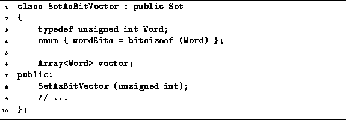

Data Structures and Algorithms
with Object-Oriented Design Patterns in C++
Data Structures and Algorithms
with Object-Oriented Design Patterns in C++In the typical C++ implementation, a bool occupies between one and four bytes. However, since there are only the two values true and false, a single bit is sufficient to hold a Boolean value. Therefore, we can realize a significant reduction in the memory space required to represent a set if we use an array of bits. Furthermore, by using bitwise operations to implement the basic set operations such as union and intersection, we can achieve a commensurate reduction in execution time. Unfortunately, these improvements are not free--the operations Insert, IsMember and Withdraw, all slow down by a constant factor.
Since C++ does not directly support arrays of bits,
we must simulate an array of bits using an array of machine words.
Program  illustrates how this can be done.
The class SetAsBitVector represents the elements of a the set
using the bits in an array of unsigned integers
(i.e., type Word).
The enumerated constant wordBits is defined as the number
of bits in a single Word.
illustrates how this can be done.
The class SetAsBitVector represents the elements of a the set
using the bits in an array of unsigned integers
(i.e., type Word).
The enumerated constant wordBits is defined as the number
of bits in a single Word.

Program: SetAsBitVector Class Definition
 Copyright © 1997 by Bruno R. Preiss, P.Eng. All rights reserved.
Copyright © 1997 by Bruno R. Preiss, P.Eng. All rights reserved.